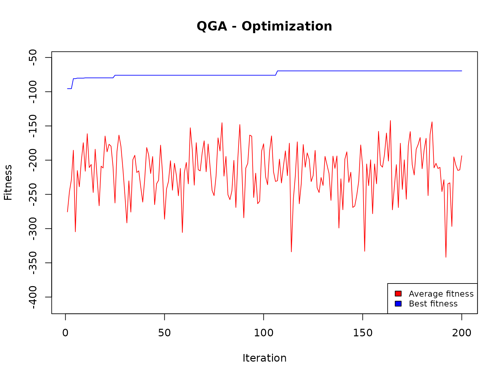
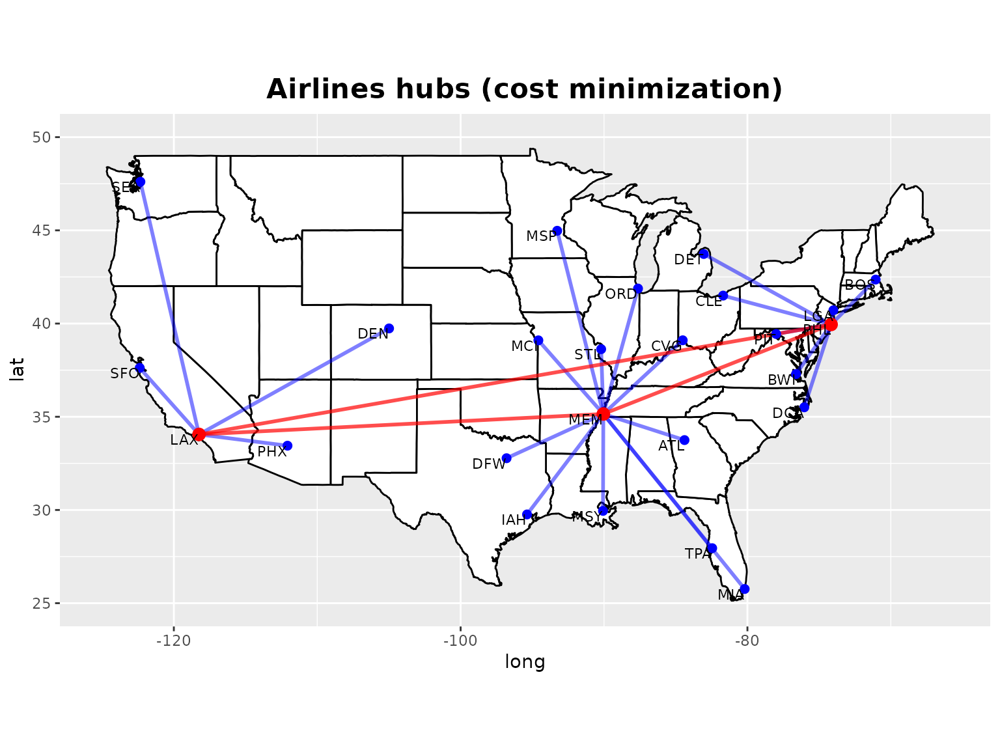

In this example, we show how, With the Quantum Genetic Algorithm, it is possible to determine the most convenient hubs, given a set of 25 USA airports.
As input data, we consider the 25 airports, with their geographical coordinates:
cities <- read.csv("Airlines_cities.csv")
print(cities)
#> ID City Lat Long
#> 1 1 ATL 33.7490 -84.3880
#> 2 2 BWI 37.2904 -76.6122
#> 3 3 BOS 42.3601 -71.0589
#> 4 4 ORD 41.8781 -87.6298
#> 5 5 CVG 39.1031 -84.5120
#> 6 6 CLE 41.4993 -81.6944
#> 7 7 DFW 32.7767 -96.7970
#> 8 8 DEN 39.7392 -104.9903
#> 9 9 DET 43.7314 -83.0458
#> 10 10 IAH 29.7604 -95.3698
#> 11 11 MCI 39.0997 -94.5786
#> 12 12 LAX 34.0522 -118.2437
#> 13 13 MEM 35.1495 -90.0490
#> 14 14 MIA 25.7617 -80.1918
#> 15 15 MSP 44.9778 -93.2650
#> 16 16 MSY 29.9511 -90.0715
#> 17 17 LGA 40.7128 -74.0060
#> 18 18 PHL 39.9526 -74.1652
#> 19 19 PHX 33.4484 -112.0740
#> 20 20 PIT 39.4406 -77.9959
#> 21 21 STL 38.6270 -90.1994
#> 22 22 SFO 37.6213 -122.3790
#> 23 23 SEA 47.6062 -122.3321
#> 24 24 TPA 27.9506 -82.4572
#> 25 25 DCA 35.5072 -76.0369In addition, we get two square matrices. The first one contains the costs:
cost <- read.csv("Airlines_cost.csv",header=F)
str(cost)
#> 'data.frame': 25 obs. of 25 variables:
#> $ V1 : num 0 577 946 598 374 ...
#> $ V2 : num 577 0 370 613 429 ...
#> $ V3 : num 946 370 0 858 750 ...
#> $ V4 : num 598 613 858 0 255 ...
#> $ V5 : num 374 429 750 255 0 ...
#> $ V6 : num 560 313 556 311 226 ...
#> $ V7 : num 709 1196 1541 790 794 ...
#> $ V8 : num 1208 1502 1765 907 1080 ...
#> $ V9 : num 604 406 621 237 239 ...
#> $ V10: num 695 1242 1603 932 880 ...
#> $ V11: num 681 960 1251 406 533 ...
#> $ V12: num 1937 2318 2600 1742 1890 ...
#> $ V13: num 332 787 1137 486 402 ...
#> $ V14: num 593 950 1267 1187 947 ...
#> $ V15: num 909 939 1125 346 599 ...
#> $ V16: num 426 1000 1368 830 700 ...
#> $ V17: num 756 179 190 720 578 ...
#> $ V18: num 672.6 96.3 274.3 675.3 512.4 ...
#> $ V19: num 1590 2000 2299 1447 1571 ...
#> $ V20: num 527 211 494 404 256 ...
#> $ V21: num 483 736 1043 256 307 ...
#> $ V22: num 2141 2456 2703 1854 2036 ...
#> $ V23: num 2184 2340 2504 1733 1967 ...
#> $ V24: num 408 844 1189 1006 775 ...
#> $ V25: num 540.7 36.5 405.8 592 399.2 ...that is, for each origin airport, the unit cost (the price of the ticket), necessary to reach the destination airport.
The second one is related to the flows:
flow <- read.csv("Airlines_flow.csv",header=F)
str(flow)
#> 'data.frame': 25 obs. of 25 variables:
#> $ V1 : num 0 6469 7629 20036 4690 ...
#> $ V2 : num 6469 0 12999 13692 3322 ...
#> $ V3 : num 7629 12999 0 35135 5956 ...
#> $ V4 : num 20036 13692 35135 0 19094 ...
#> $ V5 : num 4690 3322 5956 19094 0 ...
#> $ V6 : num 6194 5576 14121 35119 7284 ...
#> $ V7 : num 11688 3878 5951 21423 3102 ...
#> $ V8 : num 2243 3202 5768 27342 1562 ...
#> $ V9 : num 8857 6699 16578 51341 7180 ...
#> $ V10: num 7248 4198 4242 15826 1917 ...
#> $ V11: num 3559 2454 3365 28537 2253 ...
#> $ V12: num 9221 7975 22254 65387 5951 ...
#> $ V13: num 10099 1186 1841 12980 1890 ...
#> $ V14: num 22866 7443 23665 44097 7097 ...
#> $ V15: num 3388 1162 6517 51525 2009 ...
#> $ V16: num 9986 5105 3541 14354 1340 ...
#> $ V17: num 46618 24817 205088 172895 25303 ...
#> $ V18: num 11639 6532 37669 37305 6031 ...
#> $ V19: num 1380 806 2885 15418 1041 ...
#> $ V20: num 5261 8184 13200 26221 4128 ...
#> $ V21: num 5985 3896 7116 42303 5452 ...
#> $ V22: num 6731 7333 17165 35303 3344 ...
#> $ V23: num 2704 3719 4284 13618 1067 ...
#> $ V24: num 12250 2015 8085 17580 4608 ...
#> $ V25: num 16132 565 51895 40708 7050 ...that is, for each origin airport, the estimated number of passengers that want to reach the destination airport.
We want to minimize the total cost of the optimal solution, given by the product of the flows muliplied by the unit cost, to determine which could be the three more convenient hubs for the 25 airports.
We define the fitness function consequently:
airline_hub <- function(solution,input) {
cost <- input$cost
flow <- input$flow
penalization <- sum(cost)*0.0005
obj <- -sum(apply(cost[,solution] * flow[,solution], 1, min)) / sum(cost)
if (length(table(solution)) < length(solution)) {
obj <- obj - penalization
}
# cat("\nSolution:",solution," obj: ",obj)
return(obj)
}Some remarks:
this function will receive, as input, the cost matrix and the flow matrix;
to evaluate the current solution, in both matrices (cost and flow) we select the three columns corresponding to the three hubs, and calculate the sum of the total costs for each origin airport to reach the candidate hub, selecting the minimum (the minus sign is due to the fact that we want to minimize the value of the objective function);
a penalization is introduced to eliminate the solutions with a number of hubs lower than three.
We can now proceed with the optimization. Note that we set the value of the genome equal to 3 (the number of the desired hubs), and the number of the values to be attributed to each element of the genome is set equal to the number of the airports (25).
input <- list(cost=cost,flow=flow)
popsize = 20
Genome = 3 # Number of desired hubs
nvalues_sol = 25
set.seed(4321)
solutionQGA <- QGA(
popsize,
generation_max = 200,
nvalues_sol,
Genome,
thetainit = 3.1415926535 * 0.025,
thetaend = 3.1415926535 * 0.005,
pop_mutation_rate_init = 3/(popsize + 1),
pop_mutation_rate_end = 1/(popsize + 1),
mutation_rate_init = 3/(Genome + 1),
mutation_rate_end = 1/(Genome + 1),
mutation_flag = TRUE,
plotting = FALSE,
progress = FALSE,
verbose = FALSE,
eval_fitness = airline_hub,
eval_func_inputs = input,
stop_iters = 150)
#>
#> *** Best fitness: -69.59383
The found solution:
solution <- solutionQGA[[1]]
cities$City[solution]
#> [1] "MEM" "LAX" "PHL"
sol <- cost[,solution]
find_min_column <- function(row) {
which.min(row)
}
min_column_vector <- apply(sol, 1, find_min_column)
print(min_column_vector)
#> [1] 1 3 3 1 1 3 1 2 3 1 1 2 1 1 1 1 3 3 2 3 1 2 2 1 3
cities$Hub <- cities$City[solution][min_column_vector]
print(cities[,c(2,5)])
#> City Hub
#> 1 ATL MEM
#> 2 BWI PHL
#> 3 BOS PHL
#> 4 ORD MEM
#> 5 CVG MEM
#> 6 CLE PHL
#> 7 DFW MEM
#> 8 DEN LAX
#> 9 DET PHL
#> 10 IAH MEM
#> 11 MCI MEM
#> 12 LAX LAX
#> 13 MEM MEM
#> 14 MIA MEM
#> 15 MSP MEM
#> 16 MSY MEM
#> 17 LGA PHL
#> 18 PHL PHL
#> 19 PHX LAX
#> 20 PIT PHL
#> 21 STL MEM
#> 22 SFO LAX
#> 23 SEA LAX
#> 24 TPA MEM
#> 25 DCA PHLWe can plot them on a map:
if (!require(tidyverse)) install.packages("tidyverse", dependencies=TRUE)
if (!require(ggplot2)) install.packages("ggplot2", dependencies=TRUE)
if (!require(maps)) install.packages("maps", dependencies=TRUE)
library(tidyverse)
library(ggplot2)
library(maps)
connections <- cities %>%
left_join(cities %>% select(City, Lat, Long), by = c("Hub" = "City")) %>%
rename(Hub_Lat = Lat.y, Hub_Long = Long.y) %>%
select(City, Lat = Lat.x, Long = Long.x, Hub, Hub_Lat, Hub_Long)
hubs <- unique(cities$Hub)
hub_connections <- expand.grid(Hub1 = hubs, Hub2 = hubs, stringsAsFactors = FALSE) %>%
filter(Hub1 < Hub2) %>% # Evita duplicati e auto-connessioni
left_join(cities %>% select(City, Lat, Long), by = c("Hub1" = "City")) %>%
rename(Lat1 = Lat, Long1 = Long) %>%
left_join(cities %>% select(City, Lat, Long), by = c("Hub2" = "City")) %>%
rename(Lat2 = Lat, Long2 = Long)
usa_map <- map_data("state")
gg <- ggplot() +
geom_polygon(data = usa_map, aes(x = long, y = lat, group = group), fill = "white", color = "black") +
coord_fixed(1.3) +
xlim(-125, -66) + ylim(25, 50)
gg <- gg + geom_segment(data = connections,
aes(x = Long, y = Lat, xend = Hub_Long, yend = Hub_Lat),
color = "blue", alpha = 0.5, size = 1)
gg <- gg + geom_segment(data = hub_connections,
aes(x = Long1, y = Lat1, xend = Long2, yend = Lat2),
color = "red", alpha = 0.7, size = 1)
gg <- gg + geom_point(data = cities, aes(x = Long, y = Lat), color = "blue", size = 2)
gg <- gg + geom_point(data = cities[solution,], aes(x = Long, y = Lat), color = "red", size = 3)
gg <- gg + geom_text(data = cities, aes(x = Long, y = Lat, label = City), hjust = 1, vjust = 1, size = 3)
gg <- gg + ggtitle("Airlines hubs (cost minimization)") +
theme(plot.title = element_text(hjust = 0.5, size = 16, face = "bold"))
print(gg)